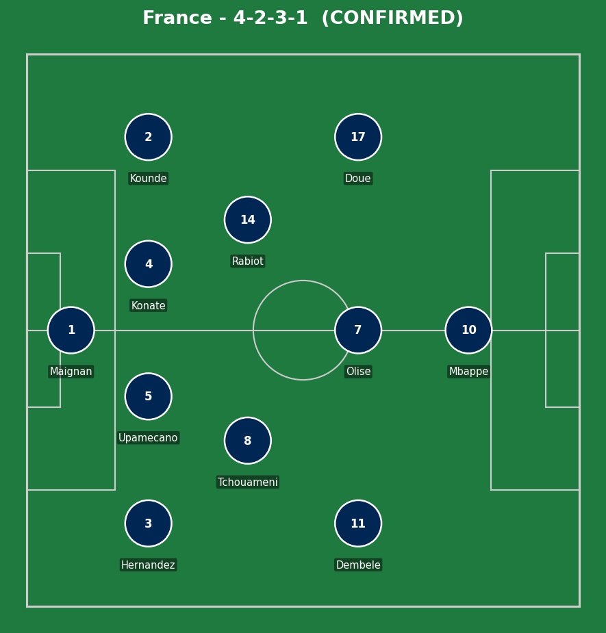
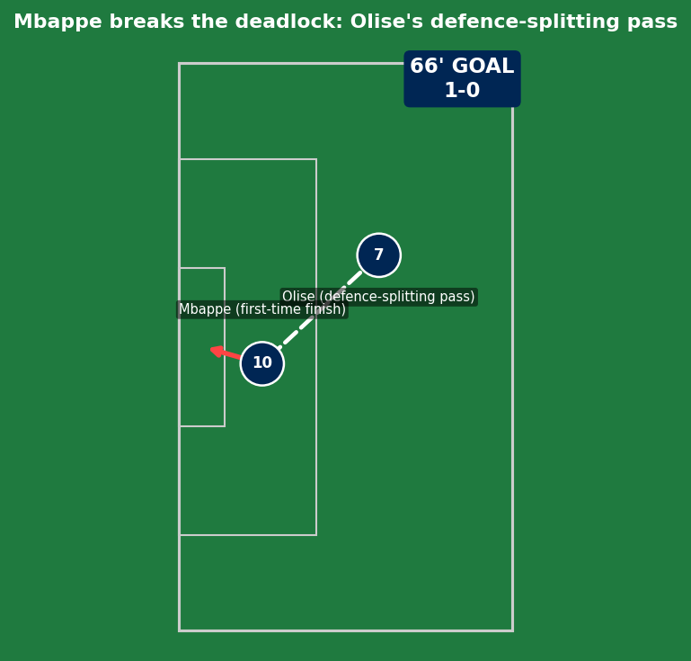
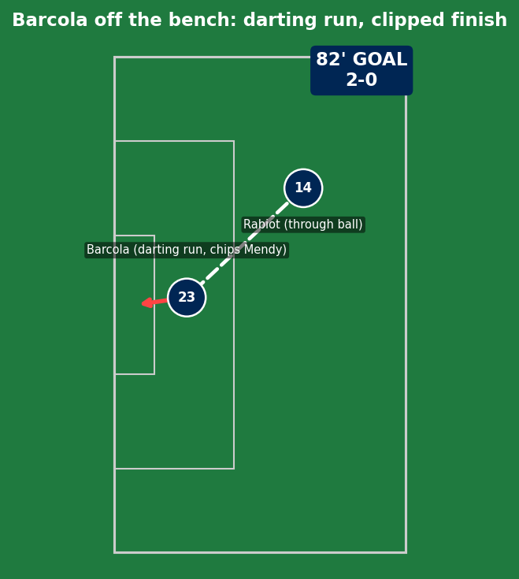
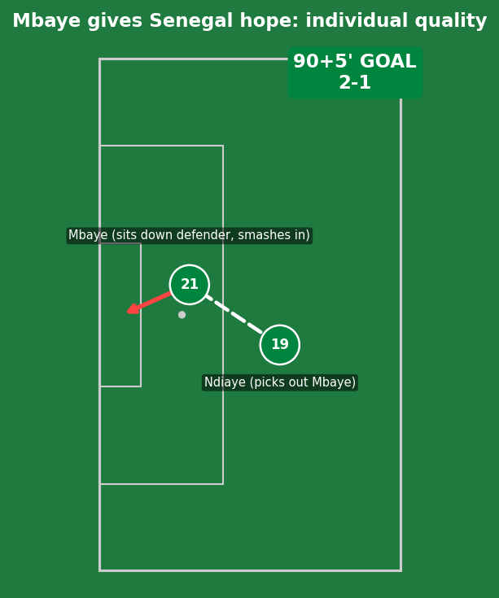
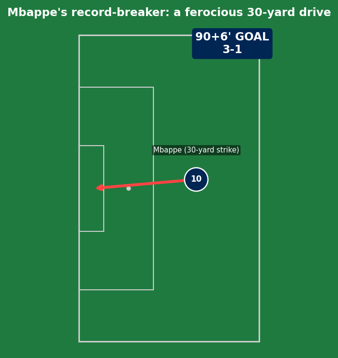
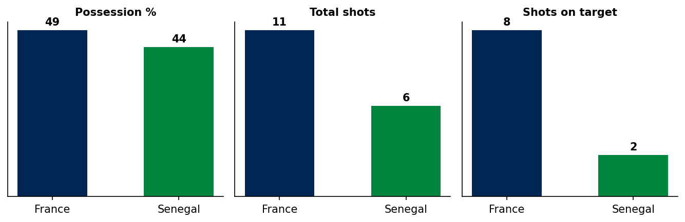
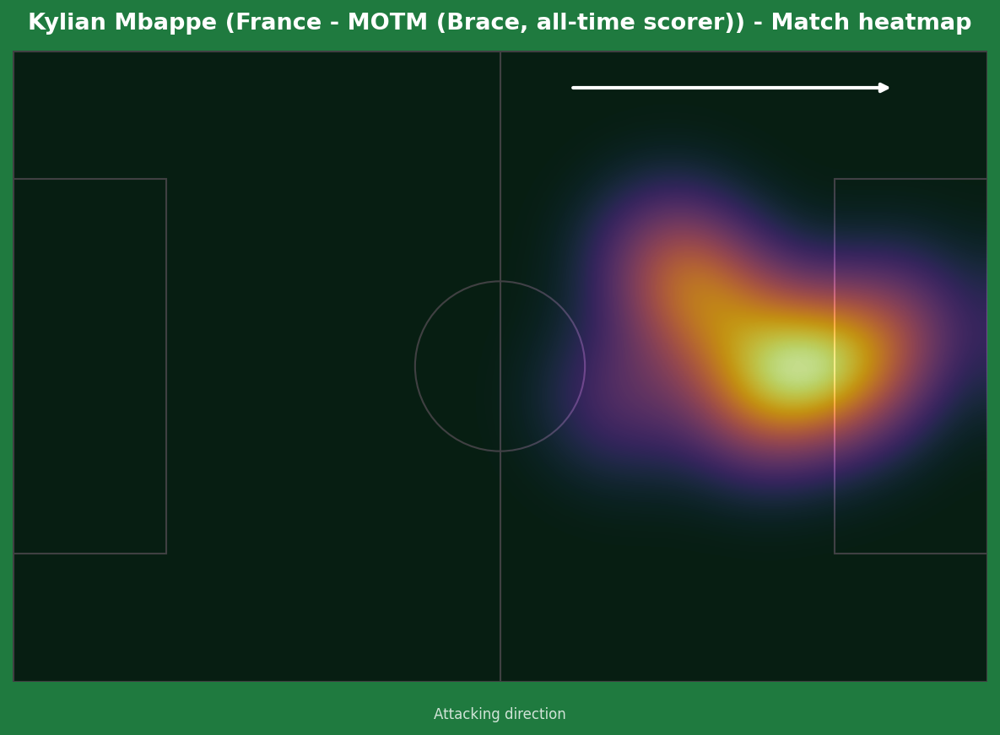
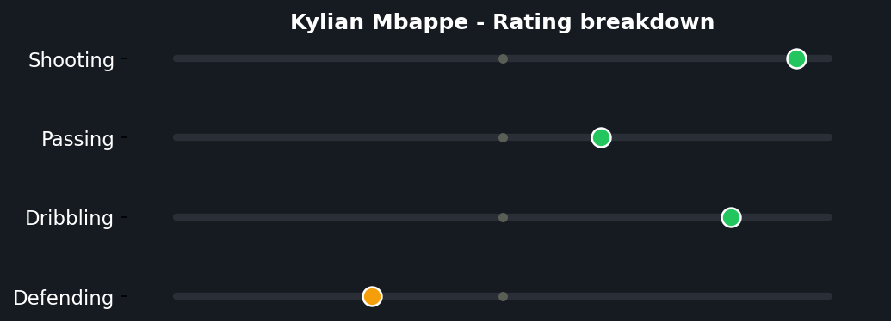
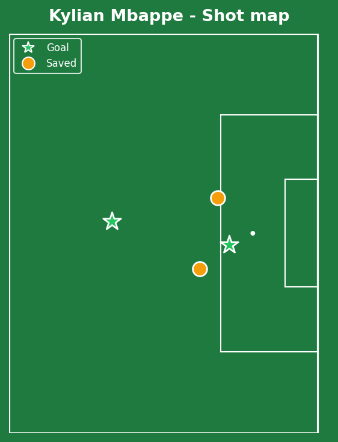

France vs Senegal
France struggled badly for an hour against a Senegal side playing with genuine ambition - Nicolas Jackson hit the post on the break, Ismaila Sarr somehow put a glorious chance over the bar. But Mbappe's introduction into the game after the break, and a tactical reshuffle at half-time, transformed the match entirely: two late goals from substitute Barcola and Mbappe himself secured the win, before Senegal's Ibrahim Mbaye snatched a stoppage-time consolation that briefly threatened a nervy finish.


France (4-2-3-1): Maignan; Hernandez, Upamecano, Konate, Kounde; Tchouameni, Rabiot; Dembele, Olise, Doue; Mbappe. Senegal (4-3-3): Mendy; Diallo, Koulibaly (c), Niakhate, Jakobs; Gueye, Lo, Ndiaye; Sarr, Jackson, Mane.
France's first-half performance was genuinely poor by their standards - just one shot in 45 minutes despite naming a front four of Mbappe, Olise, Dembele, and Doue. Senegal's organized, energetic press deserves real credit for that, not just France underperforming in a vacuum. The half-time switch (Olise and Dembele swapping positions, with Olise moving right and operating through the middle behind Mbappe) was the genuine tactical fix that unlocked the second-half transformation.
Senegal's approach throughout was committed and at times genuinely threatening on the break - this wasn't a side sitting back hoping to survive, and Jackson's post and Sarr's glaring miss are the difference between a respectable defeat and a genuine shock that slipped through their fingers.
The key tactical moment: Deschamps's half-time reshuffle. Without Olise moving into the middle to combine more directly with Mbappe, there's a real argument France draw level with their 2002 opening-match collapse against this same opponent rather than recovering.

Michael Olise's pass was the genuine moment of quality - a defence-splitting ball that left Senegal captain Koulibaly with no realistic way to recover. Mbappe's finishing was equally clean: first-time, on the turn, no second touch wasted. A combination of an exceptional pass and a clinical finish, no Senegal error to point to beyond simply being beaten by superior quality in behind.

A substitute's impact in its purest form - Adrien Rabiot's through ball was well-weighted, but Barcola's darting run to get in behind a tiring Senegal back line was the real difference-maker, with the composure to clip over an advancing Mendy rather than rush the finish.

Genuine individual quality from a player billed as the next Mbappe - Iliman Ndiaye's pass picked him out, and Mbaye sat his defender down before smashing the finish in. Maignan got a hand to it and, in fairness, probably should have done better - a small mark against the goalkeeper rather than purely a moment of Senegalese brilliance, though the strike itself was still excellent.

A genuinely outrageous finish to cap the match - picking up the ball around 30 yards out, spinning away from his marker, and lashing a shot into the top corner with no real backlift wasted. This goal moved him to 58 for France, surpassing Olivier Giroud as the nation's all-time leading scorer, and to 14 World Cup goals, level with Just Fontaine's French record and just two behind Klose/Messi's all-time mark. A statement response after a difficult club season - this was Mbappe reminding everyone exactly what he's capable of when it matters most.

An 11-6 shot count looks closer than the eventual scoreline, reflecting how genuinely competitive Senegal made this for long stretches before France's class told late on.



The first-half touch count (fewest of anyone on the pitch) tells an honest story that the final scoreline doesn't - he was genuinely quiet, even invisible, for 45 minutes, and his harshest critics had real ammunition heading into the break. The second-half transformation is exactly why he's considered among the very best: two goals of completely different profiles (a clinical first-time finish, then a wonder strike from distance) inside 25 minutes, on a day where two career milestones were on the line. This wasn't a flawless 90 minutes, but it was a player elevating his level dramatically exactly when his team and his own legacy needed it.
Illustrative reconstruction based on known event locations, not raw GPS tracking data.
France
Mbappe - 8.5 ⭐ MOTM (brace, 2 records)
Olise - 8.0 (assist, transformed the game)
Barcola - 7.5 (impact sub goal)
Maignan - 5.5 (should do better on Mbaye's goal)
Senegal
Mbaye - 7.0 (genuine quality off the bench)
Jackson - 6.5 (hit the post, unlucky)
Koulibaly - 5.5 (beaten for the opener)
Mendy - 6.0 (kept it respectable)
- France's first-half struggles are a genuine concern heading into the rest of the group - this performance level wouldn't have been enough against a more clinical opponent than Senegal.
- The penalty controversy is worth tracking as a tournament-wide officiating pattern - if similar marginal calls keep going unreviewed-to-overturned, it becomes a legitimate storyline about VAR's actual threshold for intervention.
- Mbappe's response to a difficult club season, delivered on the biggest stage with two records broken in one night, is the standout individual story of the day.
Next: France face Iraq in Philadelphia. Senegal face Norway at the same venue.